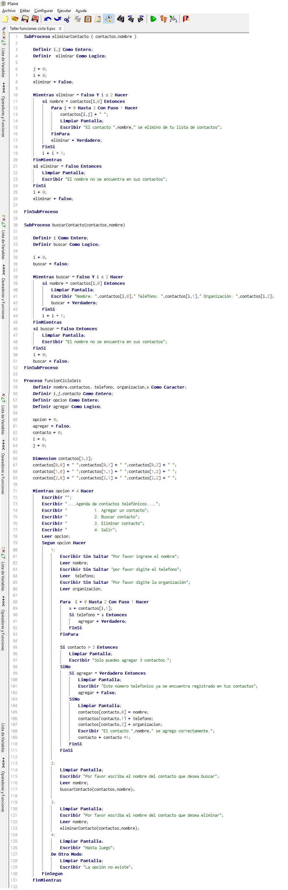
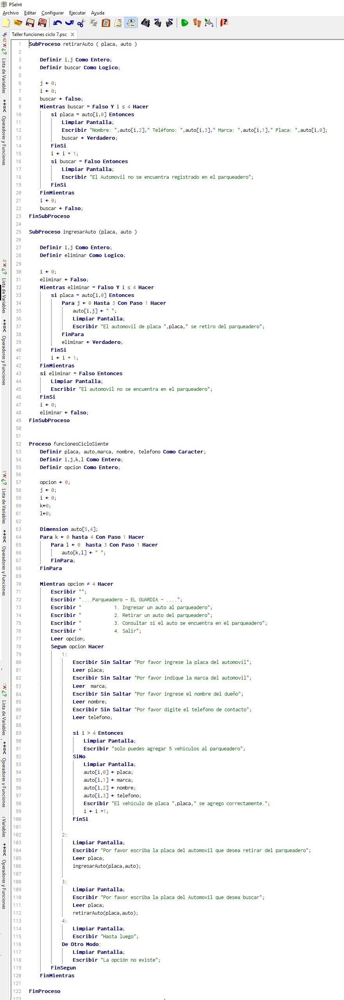
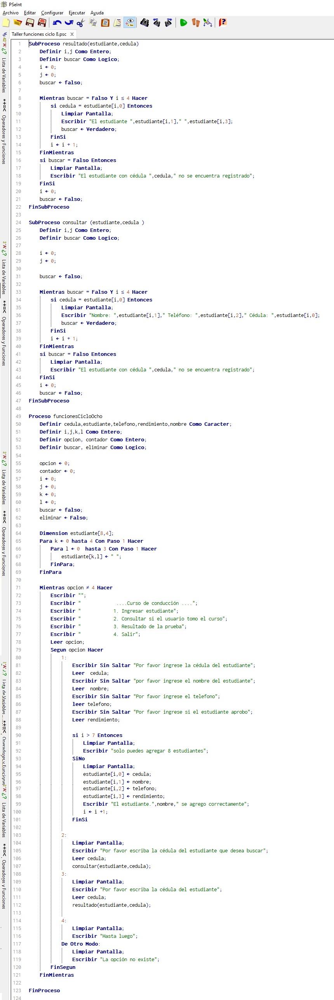
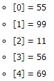
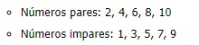
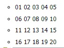
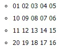
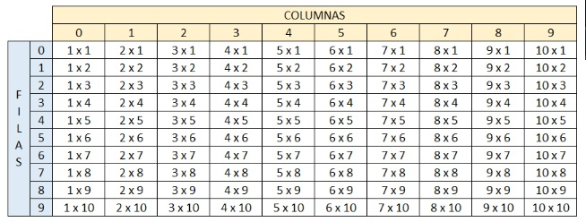

1. Organizar todos los puntos del taller de condicionales en modo funciones.
1. Realizar un programa en el cual se solicite la edad de una persona.
Si la persona es mayor o igual a 18 años, deberá mostrar en pantalla: Usted es mayor de edad.

2. Realizar un programa en el cual se solicite la edad de una persona. Si la persona es menor a
18 años, deberá mostrar en pantalla: Usted aún es un niño(a).

3. Realizar un programa en el cual se solicite el nombre, apellidos y edad de la persona. Si la
persona es mayor o igual a 18 años, entonce se deberá imprimir en pantalla [Nombre completo] usted
es mayor de edad, por lo tanto puede entrar a la fiesta. Si la edad de la persona es menor que 18 años,
entonces, deberá imprimirse el siguiente mensaje: [Nombre completo] usted es menor de edad, por lo tanto,
no puede entrar a la fiesta, por favor devuélvase a su casa.

4. La video tienda que presta sus servicios de alquiler de películas a los usuarios del barrio el
Porvenir, requiere de una aplicación que permita registrar el alquiler de las películas que adquieren
sus usuarios. Para cada usuario se debe permitir la opción de alquilar película, consultar películas
disponibles y recibir película en la video tienda con la opción de realizar anotaciones sobre estas si
se llegan a presentar daños u otra novedad sobre la película.

5. La Droguería Mi Salud presta sus servicios en la localidad de Suba y requiere una aplicación para
poder facturar los productos que vende a sus clientes y para ello, los productos tienen unas
características que deben indicársele al cliente para que pueda escoger el producto a comprar. Para cada
cliente, se tienen las opciones de compra de producto, consulta de precios por producto y devoluciones en
caso de que se presenten.

6. El taller de motos "El Maquinista" recibe motocicletas de alto cilindraje para realizar las respectivas
revisiones y requiere una aplicación que le permita registrar los servicios generados a sus clientes. Para
cada motocicleta se debe tener registro del ingreso al taller y las observaciones por parte del cliente.
También debe existir registro de salida del taller con las novedades y otra de arreglos hechos por el mecánico
en caso de que se requiera inventariar cambios repuestos en la motocicleta al entregarla..

7.La Secretaría de Salud Municipal requiere de una aplicación que le permita calcular el IMC (Índice de
masa corporal) y requiere los datos peso en kilogramos y estatura en metros Para cada persona encuestada
adicional a los datos suministrados, debe mostrar el resultado para cada uno y establecer en qué rango se
encuentra (bajo peso, normal, sobrepeso y obeso).

8. El pastelero Don Carlos es el mejor pastelero de la ciudad y requiere una aplicación que le permita registrar
los pedidos de los clientes en cuanto a las tortas que realiza. Cada torta tiene unas características propias
como sabor, cantidad (porciones) y decoraciones). Se requiere que la aplicación permita registrar los pedidos,
las tortas disponibles y las ventas que se registren diariamente.

9. El profesor de geometría está explicando a sus estudiantes las fórmulas para calcular el área de
diferentes figuras geométricas, para ello requiere una aplicación que le facilite el ejercicio
solicitándole los valores al estudiante. La aplicación debe permitir que el estudiante seleccione si
desea calcular el área de un rectángulo, triángulo o trapecio. No olvide solicitar los datos necesarios
para realizar cada cálculo y mostrar su respectivo resultado.

10. El banco "Su banco fiel" es un banco que inicia sus actividades financieras y necesita una aplicación
para llevar las cuentas de sus usuarios; por lo tanto, se sugiere que la cuenta tenga los atributos
titular y cantidad. Para cada cliente las cuentas permitirán realizar ingresos, retiros o consultas de
valor. En los ingresos no se pueden insertar valores negativos y para los retiros el valor no puede ser
mayor al valor que tiene en la cuenta.

2. Organizar los puntos 6, 7 y 8 del taller de ciclos en modo funciones.
6. Se está creando una aplicación que va a estar conectada con un prototipo que permita almacenar
contactos telefónicos en el dispositivo. Para ello cada contacto debe contener nombre completo, teléfono
y organización. Se requiere que la aplicación permita añadir 3 contactos verificando que el número no
esté almacenado, buscar contactos almacenados y eliminar contactos si el usuario lo requiere. Recuerde
que el sistema debe terminar cuando el usuario así lo indique.

7. El parqueadero "El guardián" presta sus servicios de parqueadero nocturno para los usuarios del barrio
y requiere una aplicación que permita registrar los vehículos que se cuidan en estas instalaciones. Se
sugiere que el parqueadero tenga los atributos del vehículo como son, placa y marca, y los datos del
cliente como son nombre completo y número de teléfono. Para cada vehículo se debe permitir la opción de
ingresar al parqueadero, retirar del parqueadero y consultar si un vehículo se encuentra en el parqueadero. Recuerde que el sistema debe terminar cuando el usuario así lo indique. Tenga en presente que el parqueadero solo puede almacenar máximo 5 vehículos.

8. La escuela automovilística "El Maestro" requiere una aplicación que permita registrar a sus clientes
en los cursos de enseñanza automovilística y establecer quienes lo han aprobado para continuar con el
trámite de adquirir la licencia de conducción. Para cada usuario se debe permitir registrar su ingreso
al curso, consultar usuarios que hayan presentado el curso y resultados de la prueba del curso
(si fueron aprobados o no). Recuerde que el sistema debe terminar cuando el usuario así lo indique.
Tenga presente que la escuela tiene capacidad máxima de gestionar 8 usuarios en su totalidad.

3. Organizar todos los puntos del taller de arreglos en modo funciones.
1. Crear un vector de tipo Entero con 5 posiciones, llenarlo con información solicitada al
usuario. Después de recoger toda la información, se requiere imprimir el índice de cada posición
en el arreglo con su valor de la siguiente manera:.


2. Crear un arreglo de números enteros de 20 posiciones, el cual, debe ser llenado con números
aleatorios entre 1 y 100; después de haber llenado dicho arreglo, se debe volver a recorrer utilizando
un ciclo diferente al que se usó para llenarse e imprimir los números pares e impares. Ejemplo


3. Imprimir los números primos del 1 al 1000, el resultado debe ser buscado de forma matemática.

4. Dada la siguiente matriz bidimensional, el cual debe de quemar en el código

Utilizando el conocimiento adquirido, a excepción de hacerlo de forma manual, imprima la siguiente matriz bidimensional.


5. Se debe de imprimir el siguiente cuadro
